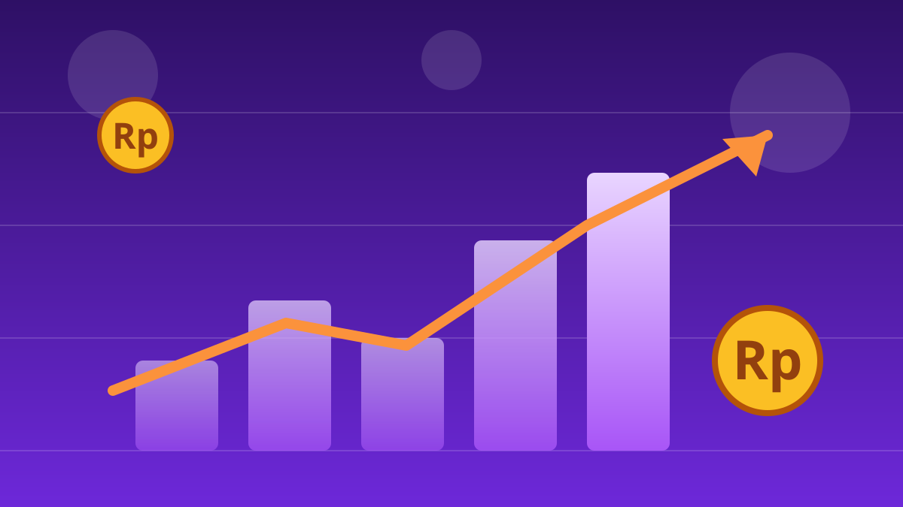

1 / 6

💰 EKONOMI
Besok Minggu, semua gerai Transmart obral gede
Dari buka sampai jam 10 malam. Geser buat syarat lengkapnya →
2 / 6
🛒
Diskonnya 50% + 20%, cuma sehari
Transmart Full Day Sale digelar Minggu, 18 Oktober 2026, serentak di seluruh gerai Transmart se-Indonesia.
Berlaku sejak toko buka hingga pukul 22.00 waktu setempat — lewat dari itu, harga balik normal.
3 / 6
🏷️
Apa aja yang kena diskon?
Kebutuhan pokok, elektronik, fesyen, furnitur, kosmetik, perlengkapan rumah tangga, sampai sepeda biasa dan sepeda listrik.
Contoh yang ramai dibahas: peralatan makan dan minum dibanderol mulai Rp12.000 — dari harga awal mulai Rp50.000, turun ke Rp15.000, lalu Rp12.000 dengan potongan tambahan.
4 / 6
💳
Syarat dapetin ekstra 20%
Ekstra diskon 20% berlaku untuk transaksi minimal Rp300.000 dengan pembayaran Allo Prime, Allo Paylater, kartu kredit Bank Mega, Bank Mega Syariah, atau Bank Mandiri.
Promo tidak berlaku untuk pembelian partai besar. Belum punya kartunya? Bisa ajukan kartu kredit Bank Mega di gerai atau upgrade ke Allo Prime lewat aplikasi Allo Bank.
5 / 6
🧮
Biar nggak kalap, ingat 3 hal ini
Pertama, bikin daftar belanja sebelum berangkat. Kedua, bandingkan harga normal dan harga promo di rak — diskon gede tetap harus dicek.
Ketiga, jangan bikin kartu kredit dadakan cuma demi diskon kalau nggak butuh-butuh amat. Diskonnya sehari, cicilannya bisa berbulan-bulan.
6 / 6
🤔
Efeknya ke lo apa?
Buat anak kos atau yang baru pindahan: ini momen restock peralatan makan, perlengkapan rumah, sampai kebutuhan harian dengan harga miring.
Tapi ingat, ekstra 20% cuma cair kalau bayar pakai metode yang disyaratkan dan belanja minimal Rp300.000 — kalau nggak, yang didapat cuma diskon dasarnya.